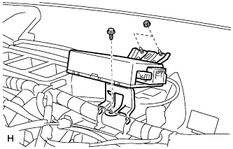
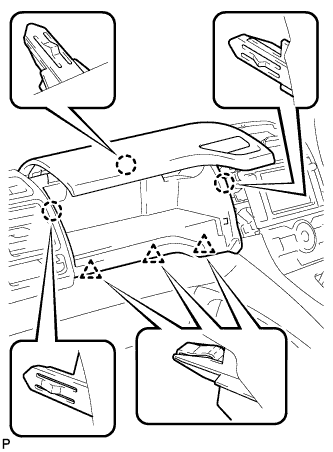
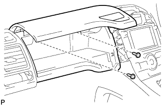
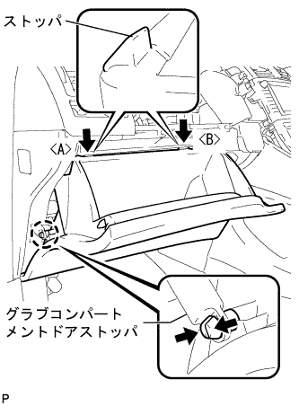
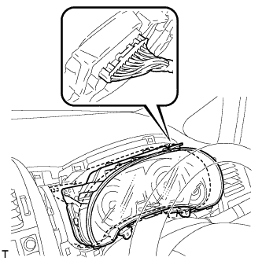
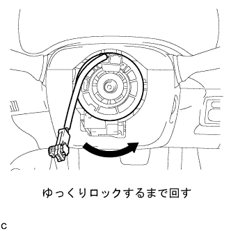
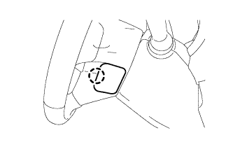

Power Steering Computer Assembly Installation |
| 1. Install Power Steering Computer Assembly |
 |
Install the power steering computer assembly with the 2 bolts and nuts.
 |
Connect the 3 connectors to the power steering computer assembly.
 |
Connect the connector to the power steering computer assembly.
Attach the wire harness clamp to the power steering computer assembly.
| 2. Install Instrument Panel UPR w/ Instrument Panel Passenger Airbag Assembly |
 |
Apply protective tape to the positions shown in the illustration.
Engage the 5 claws.

Engage the 4 clips and 3 claws.

Connect the connectors.
Install the 2 instrument panel passenger airbag assembly installation bolts <A>.
Install the instrument panel UPR w/ instrument panel passenger airbag assembly with the 2 screws <B>.

Remove the protective tape that was applied.
| 3. Connect Instrument Panel Passenger Airbag Assembly Connector |
 |
Connect the instrument panel passenger airbag assembly connector.
| 4. Install Instrument Panel Box Door Sub-assembly NO.1 |
 |
Insert instrument panel box door No.1 in the direction of arrow (1).
Insert instrument panel box door No.1 in the direction of arrow (2) so that the upper claws enter the inside of the instrument panel UPR.
 |
Engage the 3 clips and 3 claws.
 |
Install instrument panel box door No.1 with the 2 screws <B>.
Remove the protective tape that was applied.
| 5. Install Instrument Cluster Finish End Panel |
 |
Install the instrument cluster finish panel end.
| 6. Install Glove Compartment Door Assembly |
 |
Engage the 2 claws of the glove compartment door assembly hinge in the vehicle horizontal direction.
 |
Slightly deform parts A and B shown in the illustration in the direction of the arrows and engage the 2 stoppers.
Engage the claw, connect the glove compartment door stopper and install the glove compartment door assembly.
| 7. Install Instrument Panel Finish Panel LWR CTR |
 |
Engage the 6 clips and 4 claws.
 |
Install the instrument panel finish panel LWR CTR with the 2 screws <C>.
| 8. Install Position Indicator Housing Assembly |
Connect the connector.
 |
Engage the 7 claws and install the position indicator housing assembly.
| 9. Install Console Box Cover RR |
| 10. Install Shift Lever Knob |
 |
Turn the shift lever knob in the direction of the arrow shown in the illustration to install it.
| 11. Install Front Pillar Garnish RH |
 |
Remove the protective cover.
Install a new front pillar garnish clip to the garnish.
 |
Insert the guide at the front end.
Engage the front pillar garnish clip and clip, and install the front pillar garnish RH.
| 12. Install Front Pillar Garnish Corner Piece RH |
 |
Insert the 2 guides B.
Engage the 5 claws and 2 guides A, and install the front pillar garnish corner piece RH.
Remove the protective tape that was applied.
| 13. Install Front Pillar Garnish LH |
 |
Remove the protective cover.
Install a new front pillar garnish clip to the garnish.
 |
Insert the guide at the front end.
Engage the front pillar garnish clip and clip, and install the front pillar garnish LH.
| 14. Install Front Pillar Garnish Corner Piece LH |
| 15. Install Instrument Panel Register Assembly CTR |
 |
Connect the connector.
 |
Engage the 2 clips, 5 claws and 3 guides, and install the instrument panel register assembly CTR.
| 16. Install Instrument Panel Finish Panel End RH |
 |
Engage the 4 clips and install the instrument panel finish panel end RH.
| 17. Install Instrument Panel Finish Panel End LH |
 |
Engage the 4 clips and install the instrument panel finish panel end LH.
| 18. Install Combination Meter Assembly |
 |
Connect the connectors and temporarily install the combination meter assembly.
 |
Install the combination meter assembly with the 4 screws.
| 19. Install Instrument Cluster Finish Panel Assembly |
 |
Engage the 2 claws and 9 clips, and install the instrument cluster finish panel.
 |
Remove the protective tape that was applied.
| 20. Install Turn Signal Switch Assembly w/ Spiral Cable |
 |
Engage the claws and install the turn signal switch assembly w/ spiral cable to the steering column assembly.
Connect each connector to the turn signal switch assembly w/ spiral cable.
| 21. Install Steering Column Cover |
 |
Engage the 2 claws and pins, and install the steering column cover (upper side).
 |
Engage the 2 claws and install the steering column cover (lower side).
 |
Engage the 4 claws.
 |
Engage the claws.
| 22. Check Front Wheels Straight-ahead Position |
| 23. Center Spiral Cable |
Check that the IG is OFF.
Check that the battery negative terminal is disconnected.
 |
Slowly turn the spiral cable counterclockwise until it locks.
 |
From the locked position, turn the spiral cable back 2.5 turns clockwise and align the matchmarks shown in the illustration.
| 24. Install Steering Wheel Assembly |
 |
Align the matchmarks and install the steering wheel assembly to the steering column assembly.
Install the nut.
Connect each connector to the spiral cable.
| 25. Install Horn Button Assembly |
 |
Connect the horn connector to the horn button assembly.
Connect the airbag connector to the horn button assembly and lock it securely.
 |
Using a torx socket wrench (T30), install the horn button assembly to the steering wheel assembly with the 2 torx bolts.
| 26. Install Steering Wheel Cover Lower NO.3 |
 |
Engage the claws and install the steering wheel cover lower No.3.
| 27. Install Steering Wheel Cover Lower NO.2 |
 |
Engage the claws and install the steering wheel cover lower No.2.
| 28. Check Steering Wheel Assembly Center Position |
| 29. Install Battery Negative Terminal |
| 30. Inspect Airbag Warning Light |
)| 31. Torque Sensor 0 Point Calibration and Rotation Angle Sensor Output Calibration |
)| 32. Setting Procedure When Disconnecting/Reconnecting Battery Terminal |
)